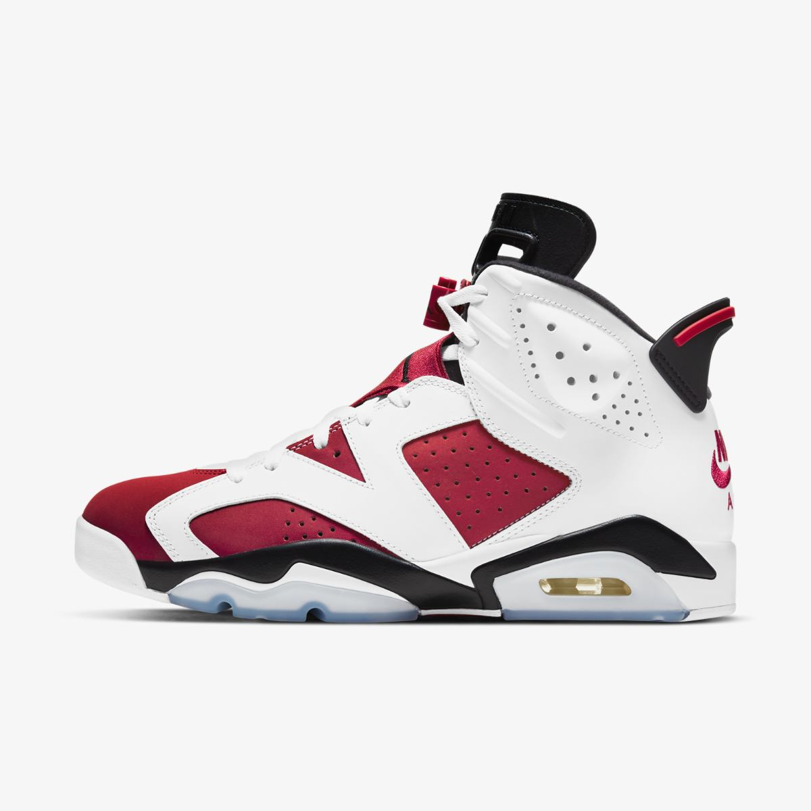

AIR JORDAN 6 RETRO
Кроссовки Jordan 6 Retro DMP 2020 с традиционной посадкой сочетается с мягким Air Jordan 6 «DMP» впервые был выпущен как половина легендарного пакета «DefiningMoments» 2006 года вместе с Air Jordan 11, и теперь он собирается вернуться впервые в январе 2020 года Эта версия Air Jordan 6 Retro создана в честь особого для Китая события и выполнена из первоклассных материалов. Вставка Air во всю длину обеспечивает упругую амортизацию.
Характеристика товара
- Материал:Высококачественная кожа для создания утонченного образа
- Подошва:Увеличенная классическая подошва Air Force 1 из пеноматериала с платформой
- Вентиляция:Оригинальная перфорация AF1 обеспечивает вентиляцию
- Сцепления:Не оставляющая следов резиновая подметка для сцепления и износостойкости.
Размер
| us | cm |
|---|---|
| 12 | 30 |
| 13 | 30.5 |
| 11 | 29 |